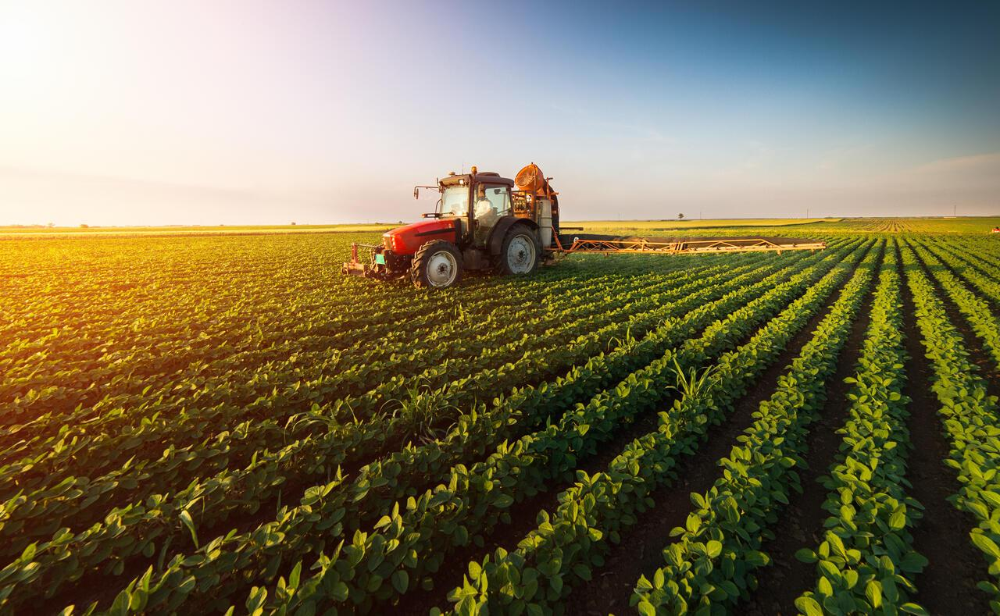

Agrinho é um programa que visa juntar as ações de Educação e de Promoção Social, destinado a aqueles que atuam na educação. Criado em 1995 no Estado do Paraná, o Programa Agrinho surgiu da necessidade de orientar trabalhadores rurais quanto ao uso adequado de defensivos agrícolas.
